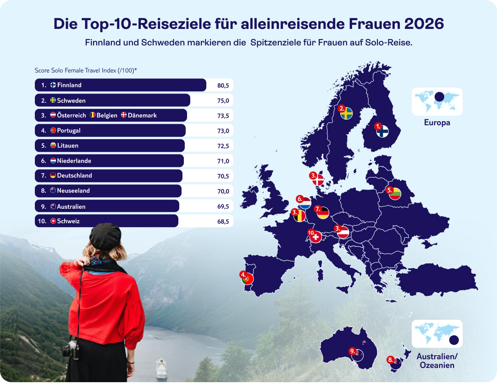
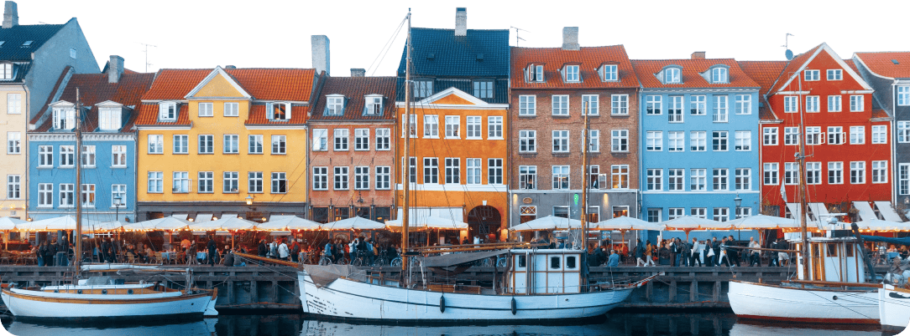
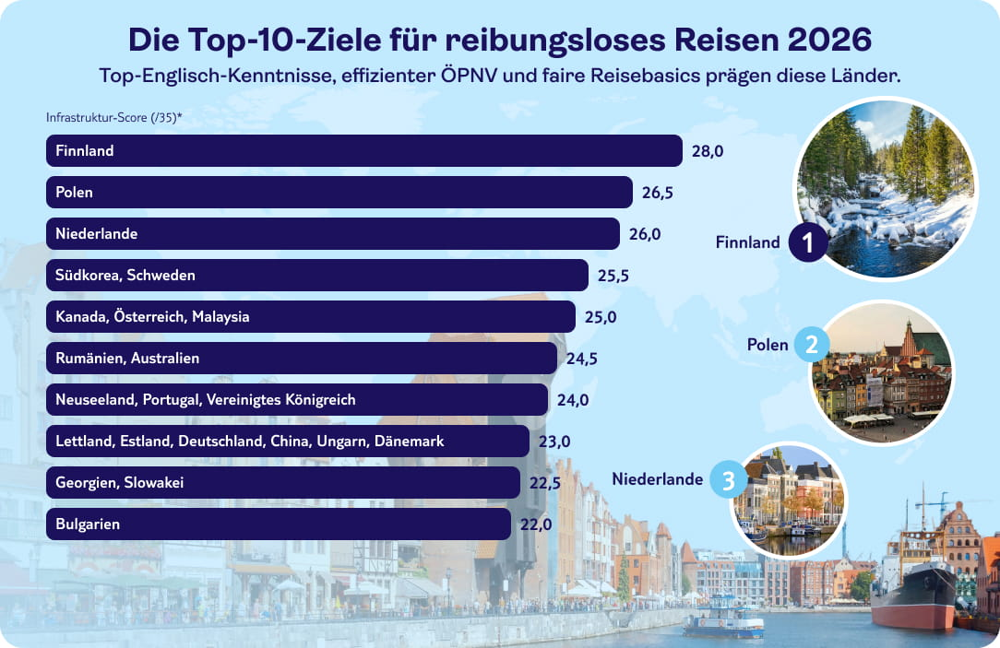
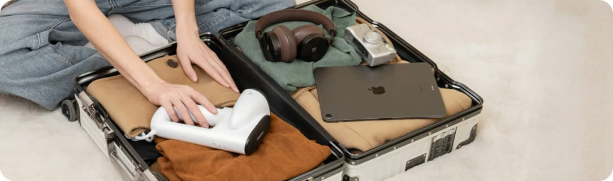

Ob als Ausdruck von Selbstbestimmung, Unabhängigkeit oder dem Wunsch nach kompromisslosen Erlebnissen: Zahlreiche reiselustige Frauen entscheiden sich (immer wieder) bewusst dafür, allein unterwegs zu sein. Auch die diesjährige TUI-Reisestudie mit 2.000 Teilnehmenden aus Deutschland zeigt, dass Solo Travel unter Frauen längst kein Randphänomen mehr, sondern ein fester Bestandteil ihrer Reiseplanung ist. Welche Fernreiseziele und europäischen Destinationen sich besonders gut für Solo Female Travel eignen, zeigt das neue TUI‑Ranking der 50 besten Destinationen für alleinreisende Frauen 2026.
Im Überblick: Frauen reisen auch 2026 solo
- 40% der Frauen in Deutschland haben bereits Solo-Travel-Erfahrung
- 29,5% würden ohne Zögern erneut solo verreisen
- 10,3% planen aktuell ihre erste Solo‑Reise, 18,8% denken darüber nach
- 25‑ bis44‑Jährige bilden mit je 32 % die stärkste Gruppe der wiederholten Solo-Reisenden
- Fast jede dritte Gen‑Z‑Frau (30,4 %) will alleine reisen, traut sich aber noch nicht
- In der Gruppe 55+ denkt jede Sechste (15,4 %) über ihre erste Solo‑Reise nach
Die 50 besten Reiseziele für alleinreisende Frauen im großen TUI Solo Female Travel Index 2026
Unbeschwert neue Orte entdecken, fremde Kulturen erleben und sich dabei jederzeit sicher fühlen – gerade für alleinreisende Frauen ist das essenziell. Gleichzeitig tauchen schnell Fragen auf: Wie sicher ist es abends auf der Straße, wie zuverlässig funktioniert der öffentliche Nahverkehr und wie gut ist die medizinische Versorgung vor Ort, falls doch einmal etwas passiert?
Unser Solo Female Travel Index 2026 liefert die Antworten. Wir haben über 150 Länder weltweit anhand von neun relevanten Kategorien untersucht, um eine erste Entscheidungshilfe zu bieten. Neben Sicherheit und Gleichberechtigung wurden auch die sprachliche und Verkehrs-Infrastruktur sowie die Ärztedichte, der Zugang zur „Pille danach“ und Reisekosten untersucht.
In unserem Top-50-Ranking siehst du auf einen Blick, welche Länder für alleinreisende Frauen besonders geeignet sind. Wähle einfach dein bevorzugtes Kriterium aus, um die Ergebnisse gezielt zu sortieren und dein perfektes Reiseziel zu finden.
Wichtiger Hinweis: Der TUI Solo Female Travel Index stellt keine allgemeingültige Empfehlung dar. Informiere Dich vor dem Antritt einer Reise in jedem Fall über geltende Reise- und Sicherheitshinweise seitens des Auswärtigen Amts
Solo Female Travel Index 2026 table
Grundlage des Rankings ist eine Analyse von über 150 Ländern anhand von neun Kategorien. Zur Sicherung der Datenqualität wurden Länder mit unzureichenden Informationen und (Teil-)Reisewarnungen des Auswärtigen Amtes (Stand: Januar 2026) ausgeschlossen. Die einzelnen Kategorien wurden zusätzlich durch eine Gewichtung in ein geeignetes Verhältnis gebracht. Hierbei bilden die objektive Sicherheit sowie die allgemeine Ärztedichte mit einer Verdopplung der Punktzahl das Rückgrat der Bewertung. Die Geschlechterparität und die Qualität des ÖPNV fließen anderthalbfach in das Ergebnis ein, während die Englischkenntnisse einfach gewertet werden. Da dem Sicherheitsgefühl nachts subjektive Einschätzungen zugrunde liegen, wurde diese Kategorie, ebenso wie die Kostenfaktoren für Taxi und Unterkunft sowie der Zugang zur „Pille danach“, zur Hälfte gewichtet.
Neben Finnland und Schweden: Entdecke die Top-10-Ziele für alleinreisende Frauen
Der Blick auf die Top 10 des Solo Female Travel Index 2026 zeigt zwei eindeutige Gewinner: Finnland (Platz 1) und Schweden (Platz 2) überzeugen in nahezu allen Kategorien – von nächtlichem Sicherheitsgefühl über die Gleichstellung der Geschlechter bis hin zur Qualität des öffentlichen Nahverkehrs. Eine Kombination aus stabilen gesellschaftlichen Strukturen und verlässlicher Infrastruktur schafft Rahmenbedingungen, in denen sich alleinreisende Frauen sorglos bewegen können. Den dritten Platz teilen sich die deutschen Nachbarländer: Österreich, Belgien und Dänemark.
Grundlage des Rankings ist eine Analyse von über 150 Ländern anhand von neun Kategorien. Zur Sicherung der Datenqualität wurden Länder mit unzureichenden Informationen und (Teil-)Reisewarnungen des Auswärtigen Amtes (Stand: Januar 2026) ausgeschlossen. Die einzelnen Kategorien wurden zusätzlich durch eine Gewichtung in ein geeignetes Verhältnis gebracht. Hierbei bilden die objektive Sicherheit sowie die allgemeine Ärztedichte mit einer Verdopplung der Punktzahl das Rückgrat der Bewertung. Die Geschlechterparität und die Qualität des ÖPNV fließen anderthalbfach in das Ergebnis ein, während die Englischkenntnisse einfach gewertet werden. Da dem Sicherheitsgefühl nachts subjektive Einschätzungen zugrunde liegen, wurde diese Kategorie, ebenso wie die Kostenfaktoren für Taxi und Unterkunft sowie der Zugang zur „Pille danach“, zur Hälfte gewichtet.

Sicher solo unterwegs: Europa bietet attraktive Ziele für alleinreisende Frauen
Wer den Sicherheitsaspekt in den Mittelpunkt stellt, sieht schnell, dass sich das Ranking im Vergleich zur Gesamtwertung leicht verschiebt: Skandinavien bleibt beim Sicherheits‑Score stabil an der Spitze, dahinter holen zahlreiche europäische Länder auf. Das Vereinigte Königreich, Neuseeland, die Schweiz und die Niederlande rücken auf die vorderen Plätze und unterstreichen, wie attraktiv diese Ziele für alleinreisende Frauen mit erhöhtem Sicherheitsbedürfnis sind.

Grundlage des Solo Female Travel Index 2026 ist eine Analyse von über 150 Ländern anhand von neun Kategorien. Zur Sicherung der Datenqualität wurden Länder mit unzureichenden Informationen und (Teil-)Reisewarnungen des Auswärtigen Amtes (Stand: Januar 2026) ausgeschlossen. Die einzelnen Kategorien wurden zusätzlich durch eine Gewichtung in ein geeignetes Verhältnis gebracht. Für das separate Sicherheitsranking wurden aus diesen neun Kategorien ausschließlich der Women, Peace & Security Index 2025/26, das subjektive Sicherheitsgefühl nachts sowie die Geschlechterparität herangezogen.
Komfort & Konnektivität: Wo das Reisen am leichtesten fällt
Wer alleine reist, weiß: Eine gut ausgebaute Infrastruktur kann den Unterschied machen und ein entspanntes Reiseerlebnis schaffen. In diesem Teilranking stehen daher im Vordergrund, wie unkompliziert sich ein Land alleine bereisen lässt – gemessen an Englischkenntnissen, ÖPNV‑Qualität sowie typischen Kosten für Taxi und Unterkunft.
An der Spitze liegt Finnland, gefolgt von Polen und den Niederlanden , die vor allem mit guten Englischkenntnissen und einer verlässlichen, gut bewerteten ÖPNV‑Infrastruktur punkten. Dahinter positionieren sich Südkorea und Schweden , während Kanada, Österreich und Malaysia mit einem guten Mix aus Verständlichkeit im Alltag, akzeptablen Preisen und funktionierendem Verkehrsnetz überzeugen – Ziele, in denen ein Solo‑Trip dank reibungsloser Logistik und einfacher Orientierung besonders leicht fällt.

Grundlage des Solo Female Travel Index 2026 ist eine Analyse von über 150 Ländern anhand von neun Kategorien. Zur Sicherung der Datenqualität wurden Länder mit unzureichenden Informationen sowie Staaten mit (Teil-)Reisewarnungen des Auswärtigen Amtes (Stand: Januar 2026) ausgeschlossen. Die einzelnen Kategorien wurden zusätzlich durch eine Gewichtung in ein geeignetes Verhältnis gebracht. Für den Teilbereich „Reiseerlebnis“ wurden aus diesen neun Kategorien ausschließlich Englischkenntnisse der Bevölkerung, Qualität des öffentlichen Nahverkehrs sowie durchschnittliche Taxi- und Unterkunftskosten herangezogen.
Selbstbestimmt & sicher: Reiseziele mit guter medizinischer Versorgung
Ein dichtes medizinisches Netz ist für alleinreisende Frauen ein wesentlicher Komfortfaktor. Es geht um das beruhigende Wissen, im Bedarfsfall sofort professionelle Hilfe zu finden – sei es bei sportlichen Verletzungen, akuten Beschwerden oder dem schnellen Zugang zur „Pille danach“. Auch für Frauen, die während einer Schwangerschaft reisen, bietet eine hohe Ärztedichte die nötige Sicherheit für eine verlässliche Vorsorge vor Ort. Eine exzellente Infrastruktur schafft so die Freiheit und Souveränität, sich als Frau voll und ganz auf das Reiseerlebnis einlassen zu können.
An der Spitze dieses Rankings stehen Griechenland und Belgien, gefolgt von Litauen, Portugal, Georgien und Österreich, die allesamt eine hohe Ärztedichte pro 10.000 Einwohner und einen rezeptfreien Zugang zur „Pille danach“ bieten.
Die folgende Heatmap zeigt: Je intensiver die Farbe, desto unkomplizierter und schneller ist die medizinische Versorgung vor Ort garantiert.
Medical Travel Heat Map 2026
5 Tipps für deine erste Solo-Reise
Du planst deine allererste Solo-Reise und bist ein wenig nervös? Kein Grund zur Sorge, mit einer einfachen Vorbereitung wird dein Urlaub zu einem unvergesslichen Erlebnis. Wir geben dir im Folgenden fünf wichtige Tipps, die du im Rahmen der Urlaubsvorbereitung einfach beachten solltest.
Tipp 1:
Achte auf Dein Reiseziel
Nimm dir ausreichend Zeit, um das passende Reiseziel für deine Bedürfnisse zu finden und dich mit den Gegebenheiten vor Ort vertraut zu machen. Informiere dich am besten vorab über offizielle Empfehlungen für Touristen sowie etwaige Sicherheitsrisiken, um deine Zeit vor Ort in vollen Zügen genießen zu können.
Tipp 2:
Plane Deine Reise gründlich
Wir empfehlen dir, deine Reise im Vorfeld gewissenhaft zu planen. Reserviere deine Unterkunft sowie gegebenenfalls einen Mietwagen bestenfalls vorab online und achte auf die richtigen Versicherungen. Auch Aktivitäten oder Touren kannst du bereits vor deiner Reise buchen, um in aller Ruhe einen möglichst seriösen Anbieter zu wählen.
Tipp 3:
Weniger ist mehr
Dies gilt primär für dein Gepäck. Als alleinreisende Frau bist du mit leichtem Gepäck deutlich flexibler und entspannter unterwegs. Packe also nur das Nötigste für deinen Aufenthalt ein.
Tipp 4:
Dokumente vorbereiten und
Kommunikation planen
Fertige vor Reiseantritt Kopien aller wichtigen Dokumente an und informiere Verwandte oder Freunde über dein Vorhaben. Hinterlege auch deine Unterkunftsadresse und achte darauf, erreichbar zu sein. Innerhalb der EU kannst du deinen Handytarif dank Roaming zu deinen gewohnten Konditionen nutzen. Im EU-Ausland lohnt es sich gegebenenfalls, auf eine eSIM zurückzugreifen.
Tipp 5:
Überforderung vermeiden
Achte auf dich selbst und nimm dir nicht zu viel vor, damit deine erste Solo-Reise nicht anstrengend wird. Gönn dir regelmäßige Ruhepausen und lass es lieber langsam angehen, solltest du dich allein in fremder Umgebung unwohl fühlen.

Fazit: In Deinem Tempo um die Welt
Ohne Begleitung zu verreisen, hört sich für viele Frauen verlockend an – die Wahl der geeigneten Destination kann dabei jedoch zur Herausforderung werden. Der TUI Solo Female Travel Index hilft dabei, Dir einen Überblick über die besten Urlaubsländer für alleinreisende Frauen zu verschaffen. Wir sind uns sicher: Mit der richtigen Vorbereitung wird Deine erste Solo-Reise sicherlich zu einem grandiosen Erfolg.
Quellen:
TUI-Studie 2026
“Global Gender Gap Report 2025” des World Economic Forum: www.weforum.org/publications/global-gender-gap-report-2025/
“Women Peace and Security Index 2025/26” des Georgetown Institute for Women, Peace and Security und des PRIO Centre on Gender, Peace and Security: giwps.georgetown.edu/the-index/
“Travel & Tourism Development Index 2024” des World Economic Forum aus dem Mai 2024, Kategorie “Safety Walking Alone at Night”: www.weforum.org/publications/travel-tourism-development-index-2024/interactive-data-and-economy-profiles-afaa00a59c/
“Travel & Tourism Development Index 2024” des World Economic Forum aus dem Mai 2024, Kategorie “Durchschnittlicher Zimmerpreis für Hotels mittlerer bis gehobener Klasse”: www.weforum.org/publications/travel-tourism-development-index-2024/interactive-data-and-economy-profiles-afaa00a59c/
“Travel & Tourism Development Index 2024” des World Economic Forum aus dem Mai 2024, Kategorie “Effizienz des ÖPNV”: www.weforum.org/publications/travel-tourism-development-index-2024/interactive-data-and-economy-profiles-afaa00a59c/
Englisch-Kenntnisse der Bevölkerung nach dem"EF English Proficiency Index 2025" von EF (Education First): www.ef.com/wwen/epi/
“Taxifahrt 1km (Normaltarif)” von Numbeo, zuletzt aufgerufen am 18.01.2026: www.numbeo.com/taxi-fare/
“Ärztedichte pro 10.000 Einwohner” von der WHO, zuletzt aufgerufen am 18.01.2026: www.who.int/data/gho/data/themes/topics/health-workforce
“Pille danach”-Verfügbarkeit vom European Consortium for Emergency Contraception, zuletzt aufgerufen am 18.01.2026: www.ec-ec.org/emergency-contraception-pills-database/search-by-country/